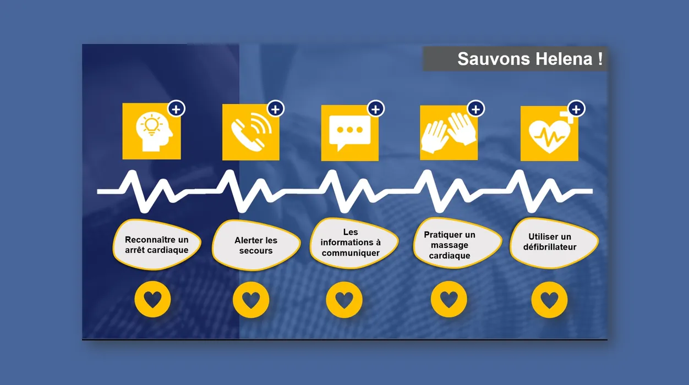
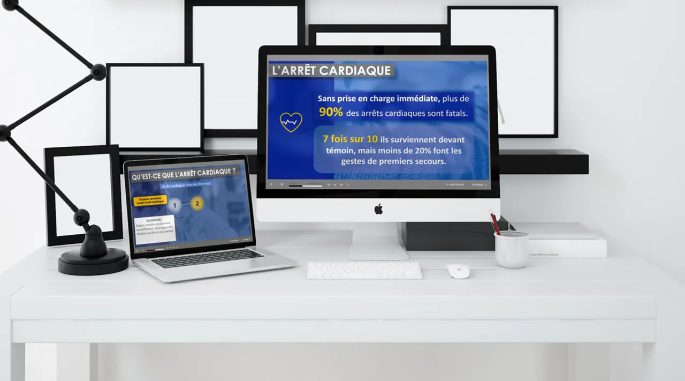

Savoir utiliser sa voix Les fondamentaux de la communication orale
Module auto-formatif multimédia de 15 minutes conçu dans le cadre d'un parcours de formation hybride — renforcer les compétences des collaborateurs en prise de parole en public.

Contexte
Ce module fait partie d'un parcours de formation hybride conçu dans le cadre d'un partenariat client souhaitant renforcer les compétences de ses collaborateurs dans le domaine de la prise de parole en public.
L'approche choisie est inductive et déductive : les apprenants sont invités à analyser des vidéos de situations réelles (incluant des contre-exemples) pour identifier eux-mêmes les bonnes pratiques, avant de les consolider via des quiz et cas pratiques.
Le module s'inscrit dans un dispositif tutoral complet — suivi de complétude sur la plateforme et espace d'échange via forum pour poser les questions après la séquence auto-formative.
Thèmes abordés
Objectifs
- 1 Identifier leur style de communication et évaluer leur axe de progrès
- 2 Renforcer leurs compétences en matière de prise de parole en public
- 3 S'approprier la posture de bon communiquant
Compétence visée
"Être capable d'identifier les bonnes pratiques en matière d'utilisation de la voix."
Aperçu du module
Cliquer sur une image pour l'agrandir.






Ma démarche
Approche inductive
Les apprenants visionnent des vidéos de situations réelles (incluant des contre-exemples) et doivent analyser de façon critique les pratiques de communication observées pour en déduire les bons réflexes.
Vidéos + quiz intégrés
Chaque séquence vidéo est suivie d'un quiz intermédiaire articulé autour des 5 thèmes (intonation, débit, articulation, rythme, répétition) pour valider la compréhension en temps réel.
Dispositif tutoral
Suivi de complétude sur la plateforme LMS. Forum dédié pour que les apprenants posent leurs questions après la séquence — le module n'est pas isolé, il s'inscrit dans une relation d'accompagnement.
Points clés du projet
Ce module illustre une approche de rapid learning intentionnel : la contrainte des 15 minutes n'est pas subie mais conçue — chaque minute est justifiée par un objectif pédagogique précis, du quiz d'amorce à la synthèse finale.
L'intégration dans un parcours hybride garantit que l'auto-formation ne reste pas isolée : elle prépare ou prolonge une session en présentiel, avec le forum comme lien entre les deux.
- check_circle Contenu théorique abordé de façon interrogative et déductive
- check_circle Vidéos de démonstration avec analyse de contre-exemples
- check_circle Quiz intermédiaires sur chacun des 5 thèmes
- check_circle Ancrage dans un parcours hybride avec tutorat actif